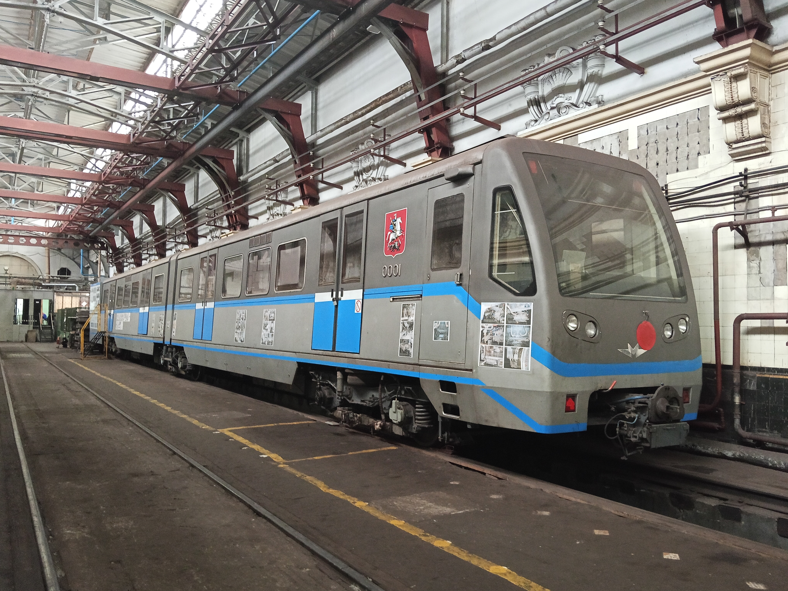
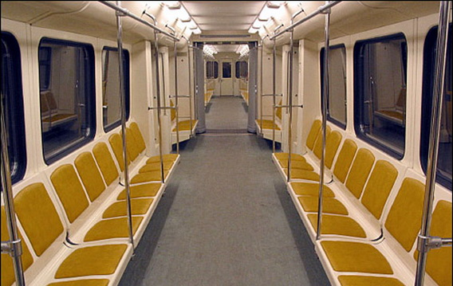

Опытный Скиф — начало семейства "Русич"
Опытный Скиф был построен в 2003 году. Изначально был в составности 0001-0002, однако позже добавился вагон 0501. Это был первый сочленённый поезд в Московском метро, положивший начало семейству "Русич".
Состав поезда
0001-0501-0002
(первоначально 0001-0002, позже добавлен 0501)
Производитель
Мытищинский машиностроительный завод (ММЗ)
Модель: 81-740/741 "Русич" (опытный)
Особенности
Первый сочленённый поезд в Московском метро
Новая конструкция кузова и тележек
Хронология испытаний
Испытания в Щербинке
Испытания на экспериментальном кольце ВНИИЖТ в Щербинке.
Поступление в метро
Поступил в метрополитен через гейт ТЧ-2 "Сокол".
Испытания на линиях
Испытания на Замоскворецкой и Серпуховско-Тимирязевской линиях.
Открытие станции
Участвовал в открытии станции "Бульвар Дмитрия Донского".
Уличные условия
Испытания в уличных условиях на Филёвской линии.
Открытие "Парка Победы"
Участвовал в открытии станции "Парк Победы".
Продолжение испытаний
Продолжение испытаний на Серпуховско-Тимирязевской линии с вагоном №0501, дополнившим состав.
Судьба вагонов
Вагон 0001
Музейный
5 декабря 2012 года стал тренажером в ТЧ-3. На данный момент это музейный вагон.
Статус: Сохранён
Вагон 0501
Списан в 2023
Некоторое время был служебным. Списан, ожидает утилизации.
Статус: Донор деталей
Вагон 0002
Списан в 2023
Некоторое время был служебным. Списан, ожидает утилизации.
Статус: Донор деталей
Вагоны 0501 и 0002: Их до сих пор не утилизировали, потому что эти вагоны используются как доноры деталей. 2 этих вагона были списаны в 2023.
Желательно сохранить хоть 1 вагон из оставшихся!
Музейный вагон 0001
📍 Текущее местонахождение
ТЧ-3 "Измайлово"
С 5 декабря 2012 года используется как тренажёр. Имеет музейный статус.
🔧 Состояние
Вагон сохранён для истории, в отличие от своих собратьев.
Это единственный вагон из опытного состава, который имеет шанс остаться в музее.
Фотогалерея

📸 pfandrom

📸 Александр Попов
Нажмите на фото для увеличения
"Опытный Скиф стал родоначальником всего семейства 'Русич' — первых сочленённых поездов Московского метро. Жаль, что из трёх вагонов сохранился только один. Остальные ещё можно спасти от утилизации."